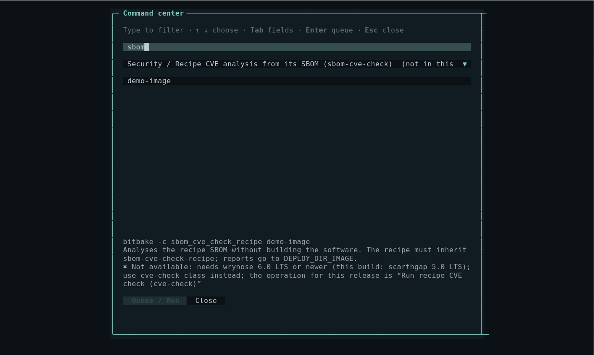
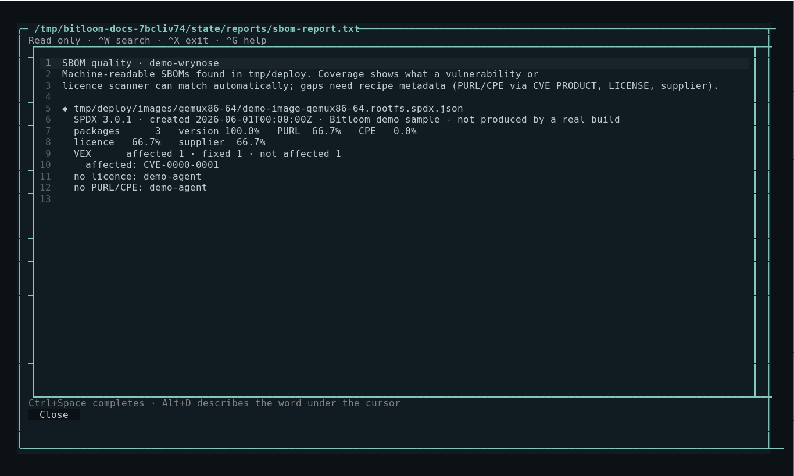
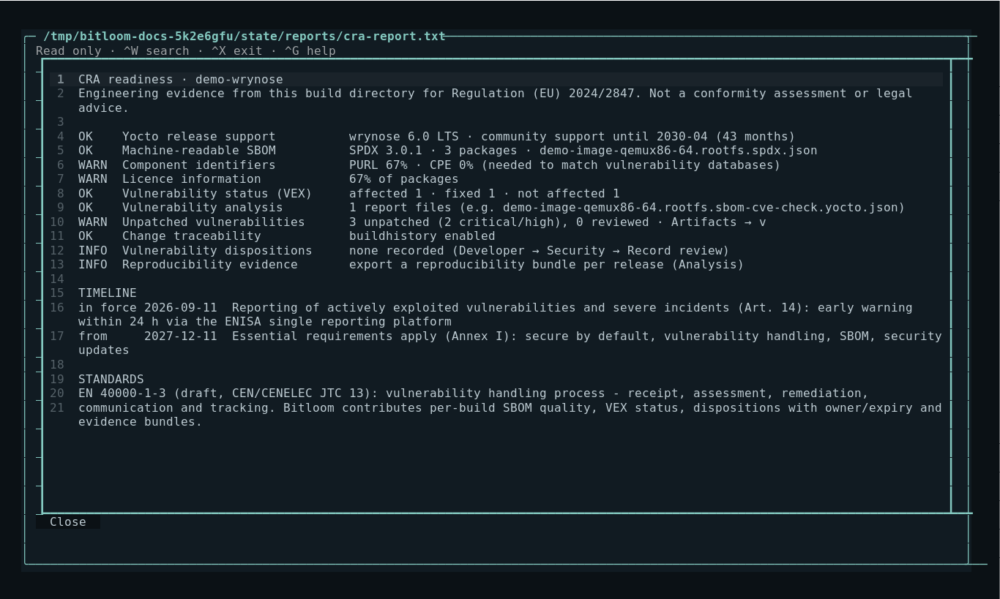
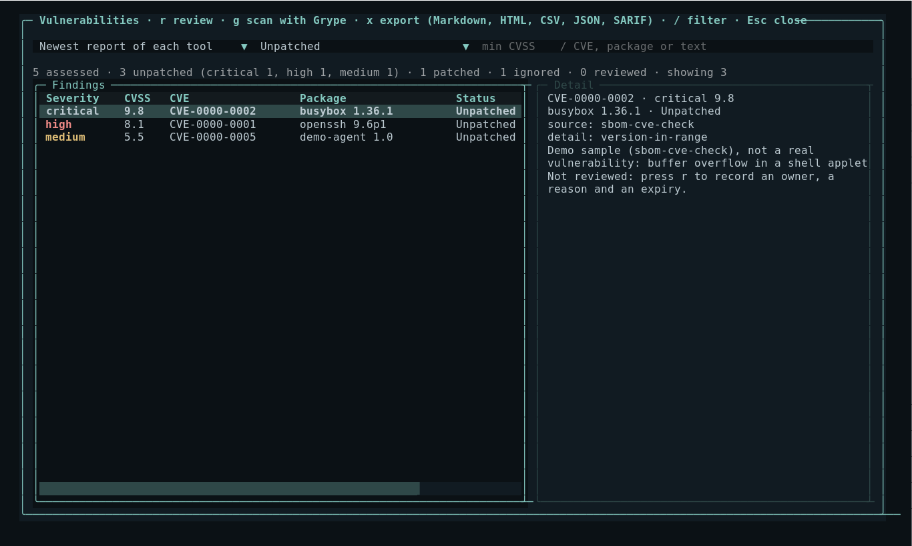
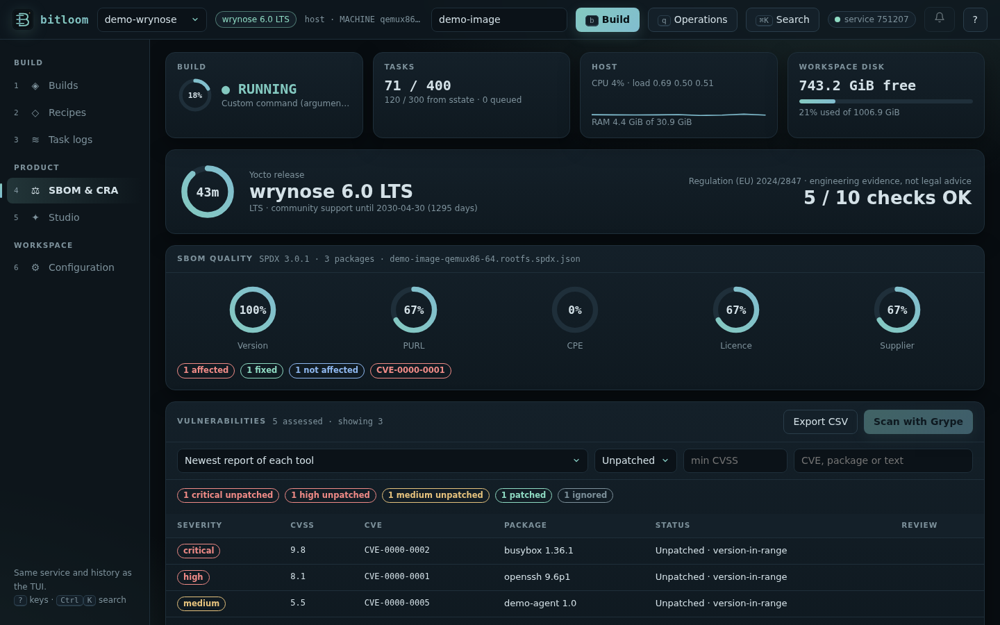
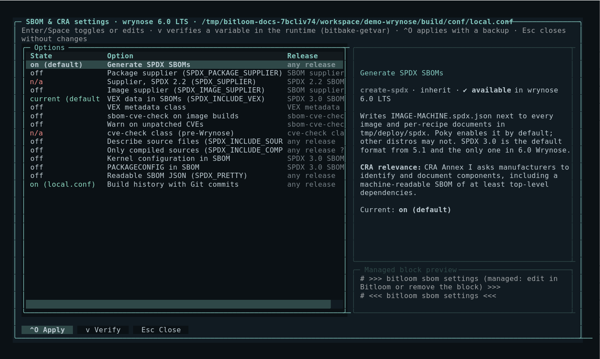

SBOM, CRA and Yocto releases
Bitloom reads the evidence your build already produces and tells you, release by release, what is missing for a machine-readable SBOM and for vulnerability handling under the EU Cyber Resilience Act. It reports engineering evidence; it is not a conformity assessment or legal advice.
Release awareness
Bitloom detects the Yocto series from LAYERSERIES_CORENAMES in the core layer (Poky, separate OE-Core or kas workspaces) and shows it in the top bar, the web header and the CRA report.
| Series | Version | Support | SBOM and CVE tooling |
|---|---|---|---|
| kirkstone | 4.0 LTS | until 2026-04 | SPDX 2.2 (create-spdx), cve-check |
| scarthgap | 5.0 LTS | until 2028-04 | SPDX 2.2 by default, cve-check |
| styhead … whinlatter | 5.1 – 5.3 | 7 months each | SPDX 3.0 default, cve-check |
| wrynose | 6.0 LTS | until 2030-04 | SPDX 3.0 only, VEX in recipe SBOMs, sbom-cve-check replaces cve-check |
Every operation, SBOM option and Studio default declares its release window. When a feature does not exist in the detected release, Bitloom says so and offers what the release can do:
- the command center marks the operation (not in this release), disables queueing and names the alternative (for example
cve-checkon Scarthgap instead ofsbom-cve-check); - the web dashboard refuses it with the same explanation;
bitloom --ciskips it with a warning annotation and a JUnit<skipped>entry instead of failing the matrix;- the SBOM settings screen shows n/a and refuses to enable it.
When the release cannot be detected locally (for example layers only inside a container image), Bitloom lets the runtime decide and probes optional tasks before queueing.
Screenshot Command center on Scarthgap explaining that sbom-cve-check needs Wrynose

SBOM quality
Artifacts → s (or bitloom --sbom) analyses the newest image and SDK SBOMs offline:
- SPDX 3.0 JSON-LD (
IMAGE.spdx.json, Styhead and later). - SPDX 2.2 images, which ship
IMAGE.spdx.tar.zst: Bitloom joins the image manifest with the per-package and recipe documents intmp/deploy/spdx, so no zstd tooling is needed.
An SPDX 3 image SBOM from OpenEmbedded also describes the recipes that produced the image (including -native build tools), the downloaded source archives and the image itself. Coverage is measured on the installed packages (software_primaryPurpose install), the components that ship; the report lists how many other elements the document describes.
For each SBOM it reports the share of packages with a version, a PURL, a CPE, licence information and a supplier, the VEX status counts (affected, under investigation, fixed, not affected) with the affected CVE identifiers, the CVEs that SPDX 2.2 recipes record as fixed, and the packages without a licence or identifier. The Organization: OpenEmbedded () placeholder does not count as a supplier: set your company in the SBOM settings.
Screenshot SBOM quality of the Wrynose sample workspace

CRA readiness
Configuration → c (or bitloom --cra, exit code 2 when a check warns) lists:
| Check | Evidence |
|---|---|
| Yocto release support | Release series, LTS and community support end |
| Machine-readable SBOM | Newest image SBOM and its format |
| Component identifiers, licences | PURL/CPE and licence coverage (90% threshold) |
| Vulnerability status (VEX) | VEX assessments in the newest SBOM |
| Vulnerability analysis | sbom-cve-check / VEX reports or the cve-check summary |
| Change traceability | buildhistory in INHERIT |
| Vulnerability dispositions | Reviews recorded in Developer → Security, with owner and expiry |
| Reproducibility evidence | Reproducibility bundles exported from Analysis |
It also shows the CRA timeline: reporting obligations for actively exploited vulnerabilities and severe incidents (Article 14) apply from 11 September 2026; the essential requirements of Annex I apply from 11 December 2027.
Screenshot CRA readiness for the Wrynose sample

EN 40000
The CRA harmonised standards are being written by CEN/CENELEC JTC 13 as the EN 40000 series. prEN 40000-1-3 covers vulnerability handling: receipt, assessment, remediation, communication and tracking of vulnerabilities, corresponding to Annex I Part II of the regulation. It is a draft at the time of writing.
Bitloom does not implement or certify the standard. Its compliance features are organised around the evidence such a process needs from the build: a per-build SBOM whose identifiers allow matching, VEX status and CVE analysis per release, dispositions with an owner and an expiry date, change traceability through buildhistory, and reproducibility bundles.
Vulnerabilities
SBOM-based CVE tools cross the components of an SBOM with vulnerability databases. Artifacts → v (web: the Vulnerabilities panel in SBOM & CRA, CLI: bitloom --vulns) merges their results into one list, one row per CVE and package, the most urgent first:
| Source | File | Release |
|---|---|---|
| sbom-cve-check (Bootlin) | tmp/deploy/images/<machine>/<image>.rootfs.sbom-cve-check.yocto.json |
Wrynose, enabled with the core/yocto/sbom-cve-check fragment |
| cve-check | tmp/log/cve/cve-summary.json, <image>.rootfs.json |
up to Whinlatter (INHERIT += "cve-check") |
| Grype (Anchore) | <state>/vulnerability-scans/*.grype.json |
any release with an SPDX JSON SBOM |
Each finding shows the severity (from CVSS v4, then v3, then v2), the score, the CVE with its link, the package and version, the status (Unpatched, Patched, Ignored) with the tool's detail (for example version-in-range or not-applicable-config), and the review recorded in Bitloom.
- Filter by source, status (unpatched, all, reviewed), minimum CVSS and text (
/). rrecords a review for the selected CVE: owner, reason or evidence reference, and an expiry date (the same dispositions as Developer → Security). A review never marks the upstream vulnerability as fixed.gscans the newest SPDX JSON SBOM with Grype (when installed) as a visible job; the list reopens with the results when it finishes. SPDX 2.2 images ship their SBOM as an archive: extract it first.xexports the visible rows as CSV.
VulnScout (Savoir-faire Linux) reads the same SPDX SBOMs, cve-check JSON, Yocto VEX and Grype results and adds a web assessment workflow and a CI mode (--match-condition, exit code 2); its meta-vulnscout layer runs it from BitBake.
CRA readiness lists Unpatched vulnerabilities (critical and high count as a warning), and CI can gate on findings:
bitloom --vulns --min-cvss 7 --fail-on-unpatched # exit 2 when an unpatched finding scores 7.0 or more
Screenshot Vulnerabilities with severity, status and detail

Screenshot Vulnerabilities panel in the web dashboard

Fixing a finding in Yocto: update the recipe or backport the fix with a patch carrying a CVE: CVE-… tag (sbom-cve-check and cve-check mark it Patched), correct the product/version matching with CVE_PRODUCT/CVE_VERSION, or record an assessment with CVE_STATUS[CVE-…] = "reason: explanation".
SBOM settings
Configuration → s manages SBOM, vulnerability and traceability options. Each option explains what it does, why it matters for the CRA and which releases provide it. Options whose first release is not confirmed are marked ?; press v to verify the variable in your runtime with bitbake-getvar.
| Option | Writes |
|---|---|
| Generate SPDX SBOMs | INHERIT += "create-spdx" |
| Package / image supplier (SPDX 3) | SPDX_PACKAGE_SUPPLIER_name/_type, SPDX_IMAGE_SUPPLIER_name/_type |
| Supplier (SPDX 2.2) | SPDX_SUPPLIER = "Organization: …" |
| VEX data in SBOMs | `SPDX_INCLUDE_VEX = none |
| VEX metadata class | INHERIT += "vex" |
| sbom-cve-check (Wrynose) | bitbake-config-build enable-fragment core/yocto/sbom-cve-check |
| Warn on unpatched CVEs | SBOM_CVE_CHECK_SHOW_WARNINGS = "1" |
| cve-check (before Wrynose) | INHERIT += "cve-check" |
| Source files, compiled sources, kernel config, PACKAGECONFIG, readable JSON | SPDX_INCLUDE_SOURCES, SPDX_INCLUDE_COMPILED_SOURCES, SPDX_INCLUDE_KERNEL_CONFIG, SPDX_INCLUDE_PACKAGECONFIG, SPDX_PRETTY |
| Build history | INHERIT += "buildhistory", BUILDHISTORY_COMMIT = "1" |
Enter/Space toggles or edits, ^O applies. Host and container profiles get one managed block in conf/local.conf (with a timestamped backup); kas profiles get a bitloom-sbom.yml overlay appended to the profile's kas_file, because kas regenerates local.conf. Fragments are enabled or disabled by queueing bitbake-config-build.
Screenshot SBOM settings with explanations and release windows

New operations
| Operation | Command | Release |
|---|---|---|
| Recipe CVE analysis from its SBOM | bitbake -c sbom_cve_check_recipe RECIPE |
wrynose+ |
| Create recipe SBOM | bitbake -c create_recipe_sbom RECIPE |
wrynose+ |
| Generate VEX metadata | bitbake -c generate_vex RECIPE |
probed |
| Enable / disable sbom-cve-check | bitbake-config-build enable-fragment / disable-fragment core/yocto/sbom-cve-check |
wrynose+ |
| Run recipe CVE check | bitbake -c cve_check RECIPE |
until whinlatter |
Try it
bitloom --demo creates demo-scarthgap and demo-wrynose next to the generic demo. Press P to switch: the Wrynose sample has an SPDX 3 SBOM with VEX and an sbom-cve-check report; the Scarthgap sample has an SPDX 2.2 SBOM and a cve-check summary. Every sample file is labelled; nothing claims a real build.
Sources: Yocto security manual: checking for vulnerabilities, VulnScout, Yocto Project 6.0 release notes, Yocto reference manual: classes and variables, Bootlin: sbom-cve-check in Wrynose, EN 40000-1-3 overview.